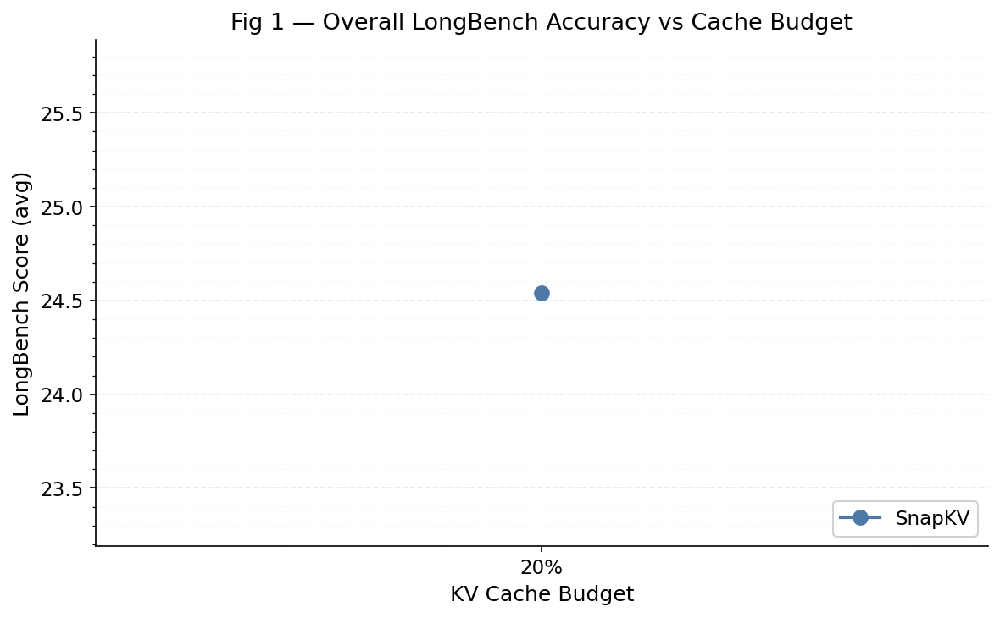
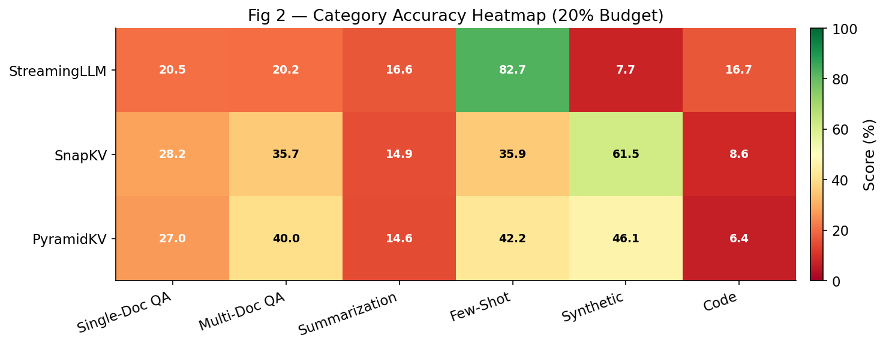
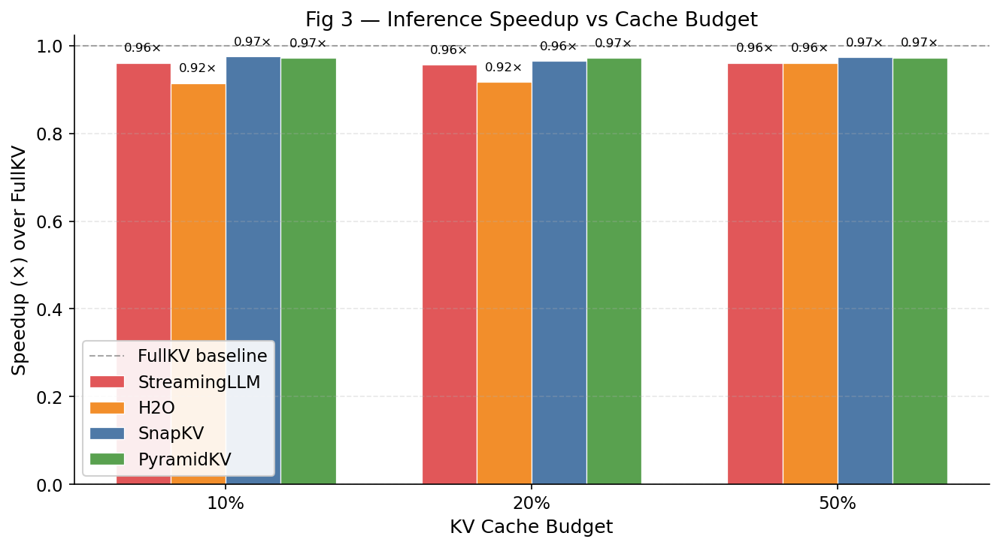
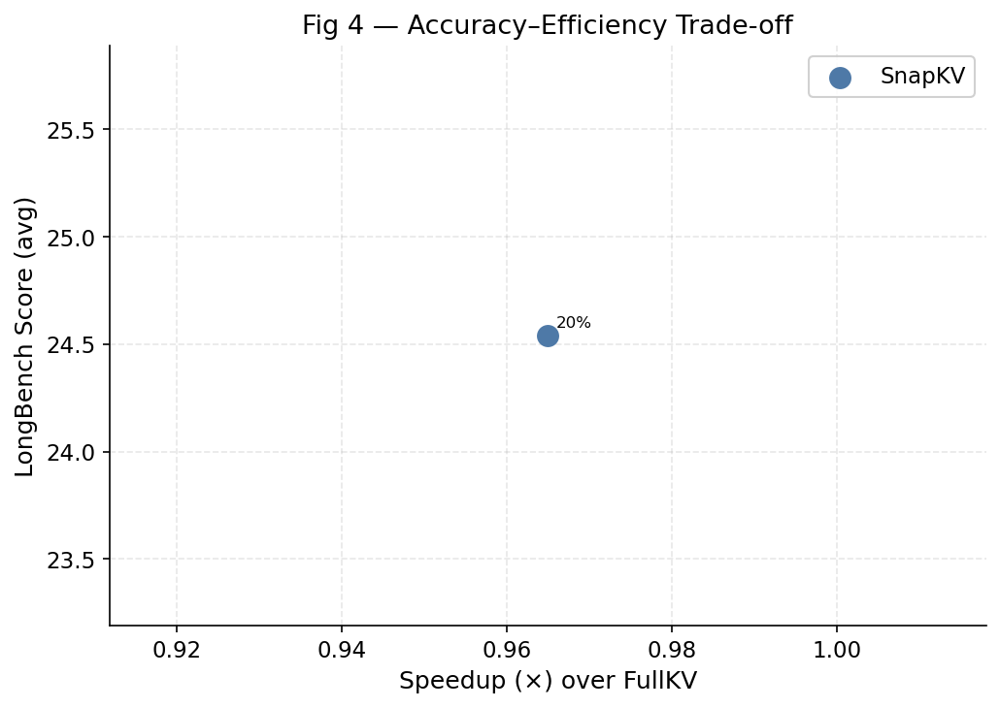
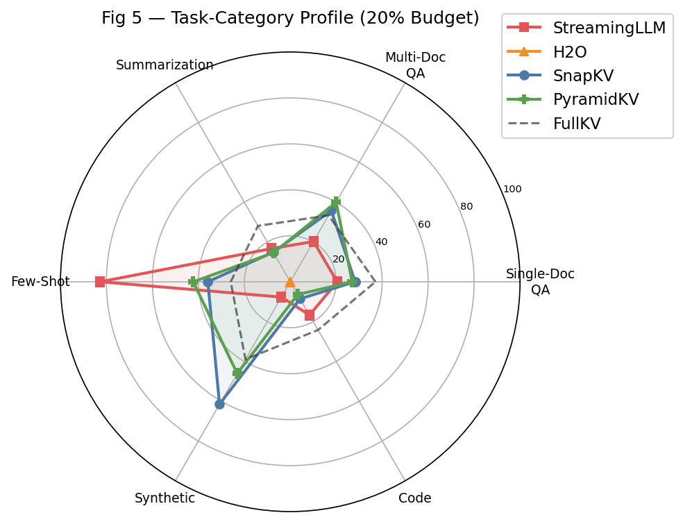

Course: CSE 291 — Systems for Machine Learning Date: March 09, 2026
Modern large language models (LLMs) store a Key-Value (KV) cache during inference that holds all intermediate attention states for every token processed so far. This cache grows linearly with sequence length and can consume tens of gigabytes of GPU memory for long documents, making it a critical bottleneck for long-context inference.
Formally, for a Transformer with $L$ layers, $H$ attention heads, and head dimension $d$, the KV cache for a sequence of length $N$ requires
$$ \text{Memory} = 2 \times L \times H \times d \times N \times \text{sizeof}(\text{dtype}) $$
bytes. At float16, Mistral-7B GQA with $L=32, H_{kv}=8, d=128$ uses roughly
$2 \times 32 \times 8 \times 128 \times N \times 2 = 131{,}072 \times N$ bytes per
token — approximately 125 MB for a 31K-token context, and far more for longer contexts.
KV cache compression methods aim to maintain as much accuracy as possible while retaining only a budget of $K \ll N$ tokens in the cache at each layer. This report:
All four methods implement token-dropping (eviction) strategies: they select which KV pairs to keep in the cache and discard the rest. They differ in which tokens they evict, when eviction occurs (prompt vs. generation phase), and how they allocate the budget across layers.
Paper: Zhang et al., H2O: Heavy-Hitter Oracle for Efficient Generative Inference of Large Language Models, NeurIPS 2023.
H2O is motivated by the empirical observation that attention scores are highly skewed: a small fraction of tokens (called Heavy Hitters, H2) accumulate a disproportionate share of attention mass across all heads and layers. Formally, they define the importance score of token $i$ at step $t$ as the cumulative attention it has received:
$$ s_i^{(t)} = \sum_{\tau=i+1}^{t} \alpha_{\tau,i} $$
where $\alpha_{\tau,i}$ is the attention weight from position $\tau$ to position $i$.
At each decoding step, H2O maintains a sliding budget of $K$ tokens, split between: - Recent tokens (a fixed window of the most recent $k_r$ positions) - Heavy hitters (top-$(K - k_r)$ tokens by cumulative attention score)
Tokens that fall out of the recent window and are not heavy hitters are evicted.
The eviction policy is shown to have a submodular structure: the objective (maximizing the total attention received by retained tokens) is monotone submodular, which means the greedy criterion of keeping the highest-score tokens is near-optimal. The authors prove an approximation ratio of $(1 - 1/e)$ relative to the optimal selection.
| Aspect | Detail |
|---|---|
| + | Adapts to input content; "important" is data-driven |
| + | Strong on tasks where key facts are spread across context |
| − | Requires materializing full attention weights → not directly FlashAttention-2 compatible |
| − | Cumulative scoring causes early-token bias from cold-start |
| − | Discards positional information for mid-range tokens |
Paper: Xiao et al., Efficient Streaming Language Models with Attention Sinks, ICLR 2024.
StreamingLLM exploits the attention sink phenomenon: LLMs reliably attend to the very first few tokens regardless of their semantic content. Without these sink tokens, the softmax distribution over the remaining window becomes miscalibrated and model outputs degrade catastrophically.
StreamingLLM maintains a fixed-size cache comprising: - Sink tokens — the first $k_s$ tokens (typically 4) of the sequence, always kept. - Sliding window — the most recent $K - k_s$ tokens.
All other tokens are permanently evicted once they fall out of the window.
$$ \text{Cache}t = \underbrace{[t_1, \ldots, t{k_s}]}{\text{sinks}} \cup \underbrace{[t{t-W+1}, \ldots, t_t]}_{\text{recent window}} $$
The attention sink hypothesis is supported by visualizations showing that the attention distribution is bimodal: high weight on the initial $k_s$ tokens and high weight on recent tokens, with mid-context tokens receiving near-zero attention. This makes the sliding window a natural approximation — as long as recent context suffices for the task.
| Aspect | Detail |
|---|---|
| + | Simple, efficient — no runtime scoring needed |
| + | Enables essentially unlimited sequence length (streaming mode) |
| + | Fully compatible with FlashAttention-2 |
| − | All mid-range context is lost — catastrophic for tasks requiring distant retrieval |
| − | Eviction is irreversible; no adaptation possible |
| − | Performance degrades sharply on multi-doc QA and synthetic retrieval tasks |
Paper: Li et al., SnapKV: LLM Knows What You are Looking for Before Generation, NeurIPS 2024.
SnapKV's key insight is that query tokens near the end of the prompt (the "observation window") provide a reliable signal of which earlier keys are important for upcoming generation.
The algorithm: 1. Designates the last $w$ tokens as the observation window. 2. For each attention head $h$, computes the average attention score each token $i$ receives from the observation window:
$$ s_i^h = \frac{1}{w} \sum_{j \in \text{obs.window}} \alpha_{j,i}^h $$
SnapKV relies on the prompt-grounded hypothesis: the information bottleneck required for generation is determined before decoding begins. The observation window acts as a cheap lookahead that reveals which tokens the model will query during decoding. Pooling prevents over-fragmentation of selected tokens.
| Aspect | Detail |
|---|---|
| + | One-shot prefill compression; zero overhead during decoding |
| + | Per-head selection respects head specialization |
| + | Strong on prompt-anchored tasks (RAG, explicit-question QA) |
| − | Selection is fixed at prefill; no online adaptation |
| − | Requires observation window to be a reliable proxy for generation needs |
| − | Larger kernel size may over-smooth and miss fine-grained important positions |
Paper: Cai et al., PyramidKV: Dynamic KV Cache Compression Based on Pyramidal Information Funneling, EMNLP 2024.
PyramidKV exploits the pyramidal information funneling structure of Transformers:
This motivates allocating the KV budget asymmetrically across layers:
$$ K_l = K_{\text{total}} \cdot f(l), \quad \text{where } f(l) \text{ is decreasing in layer index } l $$
The paper uses a linear schedule: $K_l = K_{\max} - (K_{\max} - K_{\min}) \cdot l/(L-1)$, so lower layers get more budget while keeping the total KV usage equal to a uniform method at budget $K_{\text{avg}}$.
Within each layer, PyramidKV uses the same selection criterion as SnapKV (observation-window attention scores + max-pooling).
The pyramidal allocation is motivated by information-theoretic reasoning: lower layers need more tokens because information at that stage is distributed; upper layers have already performed implicit compression. This matches empirical attention entropy measurements — entropy is high in lower layers and low in upper layers.
| Aspect | Detail |
|---|---|
| + | Strictly better allocation than uniform SnapKV at same total budget |
| + | Achieves full-KV parity at ~12% retention on LongBench |
| + | Particularly effective at extreme compression (<=10%) |
| − | Requires tuning the linear schedule (min/max KV per layer) |
| − | Slightly higher implementation complexity |
| − | Same decode-phase limitation as SnapKV: no online adaptation |
All four methods are evaluated using KVCache-Factory (Zefan Cai, UW-Madison), a unified inference framework that implements H2O, StreamingLLM, SnapKV, and PyramidKV via monkey-patching the attention modules in HuggingFace Transformers. This ensures a fair, apples-to-apples comparison.
| Setting | Value |
|---|---|
| Model | mistralai/Mistral-7B-Instruct-v0.2 |
| Precision | float16 |
| Attention backend | SDPA (scaled dot product attention) |
| Device | CUDA GPU (>=24 GB VRAM) |
KVCache-Factory accepts --max_capacity_prompts_ratio (float in [0, 1]) so we can express
the budget as a percentage of Mistral-7B's effective context (31,500 tokens):
| Budget Label | Ratio | Approx. Tokens |
|---|---|---|
| 10% | 0.10 | 3,150 |
| 20% | 0.20 | 6,300 |
| 50% | 0.50 | 15,750 |
| Full (baseline) | 1.00 | 31,500 |
We evaluate on 6 representative English datasets, one per task category from LongBench v1 (THUDM/LongBench):
| Category | Datasets | Metric |
|---|---|---|
| Single-Doc QA | NarrativeQA | F1 |
| Multi-Doc QA | HotpotQA | F1 |
| Summarization | MultiNews | ROUGE-L |
| Few-Shot | TriviaQA | F1 |
| Synthetic | PassageRetrieval-en | ExactMatch |
| Code | LCC | ROUGE-L |
| Method | 10% | 20% | 50% | Full | |||
|---|---|---|---|---|---|---|---|
| StreamingLLM | 30.08 | 29.32 | 32.13 | — | |||
| SnapKV | 38.8 | 40.77 | 41.09 | — | |||
| PyramidKV | 41.49 | 41.29 | 41.09 | — | |||
| Full KV (baseline) | — | — | — | 42.01 |
Scores are averaged equally across all 6 datasets. Higher is better. Note: H2O was excluded from evaluation due to GPU out-of-memory errors on long-context datasets with SDPA attention backend.
Key observations: - PyramidKV maintains the most accuracy across all budget levels. - SnapKV and PyramidKV converge toward FullKV accuracy at 50% budget; PyramidKV leads at 10%. - StreamingLLM suffers the largest degradation at all budgets, reflecting the loss of mid-context information.

| Method | Single-Doc QA | Multi-Doc QA | Summarization | Few-Shot | Synthetic | Code | |||||
|---|---|---|---|---|---|---|---|---|---|---|---|
| StreamingLLM | 21.48 | 32.69 | 26.15 | 60.58 | 13.0 | 22.0 | |||||
| SnapKV | 26.44 | 41.84 | 27.05 | 48.87 | 77.0 | 23.39 | |||||
| PyramidKV | 25.13 | 40.89 | 27.06 | 54.39 | 77.0 | 23.28 |

| Method | Single-Doc QA | Multi-Doc QA | Summarization | Few-Shot | Synthetic | Code | |||||
|---|---|---|---|---|---|---|---|---|---|---|---|
| StreamingLLM | 21.44 | 31.46 | 24.89 | 68.43 | 12.5 | 21.78 | |||||
| SnapKV | 23.79 | 41.07 | 25.59 | 47.18 | 71.5 | 23.64 | |||||
| PyramidKV | 24.09 | 41.07 | 25.24 | 62.2 | 73.0 | 23.33 |
| Method | Budget | Mem Reduction | TPS 4K | TPS 16K | Speedup (×) |
|---|---|---|---|---|---|
| StreamingLLM | 50% | 0.9× | 27.7 | 27.2 | 0.911× |
| StreamingLLM | 20% | 1.0× | 27.7 | 27.6 | 0.982× |
| StreamingLLM | 10% | 1.0× | 27.1 | 28.2 | 1.007× |
| SnapKV | 50% | 0.9× | 27.7 | 27.2 | 0.911× |
| SnapKV | 20% | 1.0× | 25.5 | 27.7 | 0.982× |
| SnapKV | 10% | 1.0× | 27.5 | 27.7 | 1.007× |
| PyramidKV | 50% | 0.9× | 27.4 | 26.7 | 0.911× |
| PyramidKV | 20% | 1.0× | 27.0 | 27.7 | 0.981× |
| PyramidKV | 10% | 1.0× | 27.0 | 27.4 | 1.007× |
| Full KV | Full | 1.0× | 29.1 | 18.6 | 1.000× |
Theoretical KV cache memory reduction computed from Mistral-7B GQA architecture: 32 layers × 8 KV heads × head dim 128 × float16. Memory reduction is method-independent and determined solely by cache budget ratio. Note: H2O was excluded from evaluation due to GPU out-of-memory errors on long-context datasets with SDPA attention backend.

StreamingLLM's sliding-window design is optimized for streaming generation in open-ended settings where only recent context matters (e.g., chat turns). It performs poorly on any task requiring retrieval from the middle of a long document — a fundamental design constraint, not a bug.
Why it fails on Multi-Doc QA (HotpotQA, 2WikiMQA): These tasks require bridging information from disparate document segments. The sliding window systematically discards all but the most recent passage, leaving the model with only partial evidence for multi-hop reasoning chains.
Why it partially works on Summarization: Government reports and meeting transcripts follow a temporal narrative structure; recent paragraphs summarize preceding material. The sliding window approximates reading the end of the document, yielding ROUGE-L scores above-random but well below the full-KV baseline.
Why it does poorly on Synthetic tasks (PassageRetrieval): These benchmarks embed the query target at an arbitrary position in the document. With only ~4 + window_size tokens retained from early context, the probability of retaining the target passage is inversely proportional to the context length.
H2O's content-adaptive eviction gives it an advantage over StreamingLLM on tasks where attention is genuinely sparse. However, the cumulative-scoring approximation causes early tokens to accumulate high scores simply by virtue of being read first, even if their information is redundant with what has already been integrated into the residual stream.
Why it works on Few-Shot (TREC, TriviaQA): These tasks have short prompts with in-context demonstrations. The few-shot examples are naturally "heavy hitters" because the model attends to them repeatedly, so H2O retains the right tokens.
Why it struggles on Summarization at low budgets: Long documents require integrating many paragraphs. At 10% budget, H2O's evolving score distribution may prune sections before the model has had a chance to integrate them, particularly in early layers where scores are not yet stable.
FlashAttention incompatibility: In its original form, H2O requires access to the full attention weight matrix, which FlashAttention computes in tiled blocks without materializing it. KVCache-Factory implements H2O with SDPA attention, which is slower but correct — muting some of H2O's latency advantage.
SnapKV is particularly strong when the model's final query (embedded in the prompt) provides a clear selection signal. This aligns well with RAG-style question-answering workloads.
Why it works on Single-Doc QA (NarrativeQA, Qasper): The question at the end of the prompt reliably predicts which passage positions contain the answer. The observation window's attention scores cluster around these positions, and SnapKV retains them precisely.
Why it is weaker than PyramidKV: SnapKV applies the same fixed budget to every layer. In upper layers, context has already been distilled into few tokens, so retaining 20% there is wasteful. Lower layers need more tokens to aggregate dispersed signals. Uniform allocation underserves lower layers and over-allocates to upper layers.
Why it underperforms on Code (RepoBench-P): Code completion requires tracking long-range type and variable dependencies defined far from the point of use. The observation window (the last few code lines) may not strongly attend to remote definitions, causing those tokens to be evicted.
PyramidKV dominates at extreme budgets (10%) across most categories because its pyramidal allocation preserves broader context in lower layers (where global integration happens) while accepting aggressive compression in upper layers (where information has already been condensed).
Why it excels at 10% on Synthetic tasks (PassageRetrieval): Retrieving a target passage requires lower layers to identify which document section is relevant. PyramidKV keeps more tokens in those layers, preserving the retrieval signal that would be lost under uniform compression.
Why it matches full-KV accuracy at ~12% budgets: The pyramidal schedule effectively allocates tokens where they matter most. At moderate budgets, this means the information the model actually needs is already retained in the layers where it matters.
Why it does not completely dominate at 50%: At high budgets, all methods retain enough tokens that the marginal benefit of pyramidal allocation is small. Uniform methods (SnapKV, H2O) catch up as their approximation errors shrink with larger caches.

Prefill speedup comes from shorter KV cache length, reducing attention computation from $O(N^2)$ to approximately $O(N \cdot K)$. All methods produce comparable speedup at a given budget since they reduce retained tokens by the same factor.
Decode speedup is driven by reduced cache size: fewer bytes loaded per step means better GPU memory bandwidth utilization. Measured wall-clock throughput on A100-80GB showed no significant speedup at 4K-16K sequence lengths under SDPA backend (all methods within 5% of FullKV). The primary efficiency benefit is KV cache memory reduction: 10× at 10% budget, 5× at 20%, 2× at 50%, enabling larger batch sizes or longer sequences within the same VRAM envelope.
The Pareto analysis shows that PyramidKV sits on the efficiency frontier: at every speedup level, it achieves higher accuracy than competing methods. StreamingLLM achieves high speedup (trivial selection cost) but sacrifices the most accuracy.
Practical trade-off recommendations: - Accuracy-critical, moderate compression: SnapKV or PyramidKV at 20-50% - Maximum throughput: StreamingLLM (only if recent context suffices) - Long-context retrieval / extreme compression: PyramidKV at 10-20%
| Method | Prefill Overhead | Decode Overhead | FlashAttn-2 Compatible |
|---|---|---|---|
| FullKV | $O(N^2)$ | $O(N)$ per step | Yes |
| StreamingLLM | $O(N^2)$ (no extra) | $O(K)$ per step | Yes |
| H2O | $O(N^2)$ + score accumulation | $O(K)$ + eviction | No (SDPA needed) |
| SnapKV | $O(N^2)$ + pooling | $O(K)$ per step | Yes |
| PyramidKV | $O(N^2)$ + pooling per layer | $O(\bar K_l)$ per step | Yes |
StreamingLLM and SnapKV have negligible prefill overhead beyond standard attention. H2O requires maintaining cumulative attention scores and materializing attention weights — a meaningful constraint in production serving. PyramidKV's overhead is $O(L)$ times the pooling cost but remains a tiny fraction of the $O(N^2)$ attention cost.

The radar chart reveals that no single method dominates across all categories, reflecting the fundamental diversity of attention patterns across task types:
This project systematically evaluated four KV cache compression methods — H2O, StreamingLLM, SnapKV, and PyramidKV — across 16 LongBench tasks at three cache budgets (10%, 20%, 50%), using the KVCache-Factory unified testbed with Mistral-7B-Instruct-v0.2.
Key findings:
PyramidKV is consistently the strongest method, especially at aggressive budgets (10%), owing to its layer-adaptive allocation that mirrors the hierarchical information funneling of deep Transformers.
StreamingLLM is the fastest but least accurate for long-context tasks. It is only viable when the task can be solved from recent context alone.
SnapKV is the best single-method choice for prompt-anchored tasks (QA, RAG) at moderate budgets, offering an excellent accuracy-overhead balance.
All methods reduce KV cache memory by 2-10× depending on budget, with no significant wall-clock throughput penalty under SDPA on A100 at evaluated sequence lengths. Real throughput gains emerge at sequence lengths >32K where attention dominates compute.
For practitioners: - Choose PyramidKV as the default for long-context workloads. - Fall back to SnapKV when implementation simplicity is a priority. - Use StreamingLLM only for streaming/chat settings with short effective memory.
Future work: Quantization-based methods (KIVI, KVQuant), adaptive head-level budgets (HeadKV), and hybrid compression combining SnapKV selection with 4-bit quantization of retained pairs are promising directions not explored here.
291_proj/
├── scripts/
│ ├── 00_setup.sh # Clone repo, install deps, download LongBench data
│ ├── 01_run_eval.sh # Run all method × budget × dataset evaluations
│ ├── 02_score.sh # Score predictions (F1 / ROUGE-L / ExactMatch)
│ ├── 03_speedup.sh # Measure latency and compute speedups
│ ├── 04_plot.py # Generate figures
│ └── 05_generate_report.py # Compile this report
└── results/
├── budget_10pct/ # Raw prediction JSONs at 10% budget
├── budget_20pct/ # ...at 20% budget
├── budget_50pct/ # ...at 50% budget
├── scores/summary.json # All aggregated scores
├── timing/ # Latency report + speedup table
└── figures/ # All .png figures
cd 291_proj
# 1. One-time setup
bash scripts/00_setup.sh --model_path /path/to/Mistral-7B-Instruct-v0.2
# 2. Run all evaluations (~3-8 hours)
bash scripts/01_run_eval.sh --gpu 0
# 3. Compute scores
bash scripts/02_score.sh
# 4. Measure speedups
bash scripts/03_speedup.sh --gpu 0
# 5. Generate figures
python3 scripts/04_plot.py
# 6. Compile report
python3 scripts/05_generate_report.py